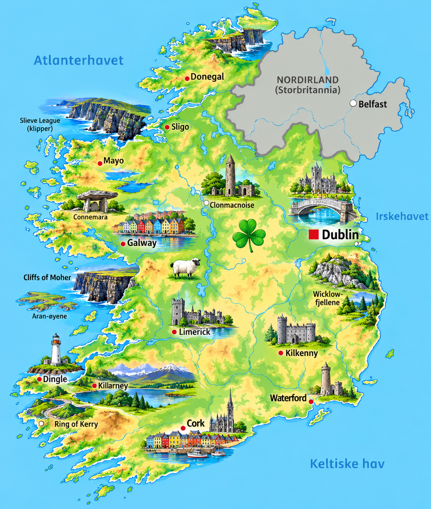
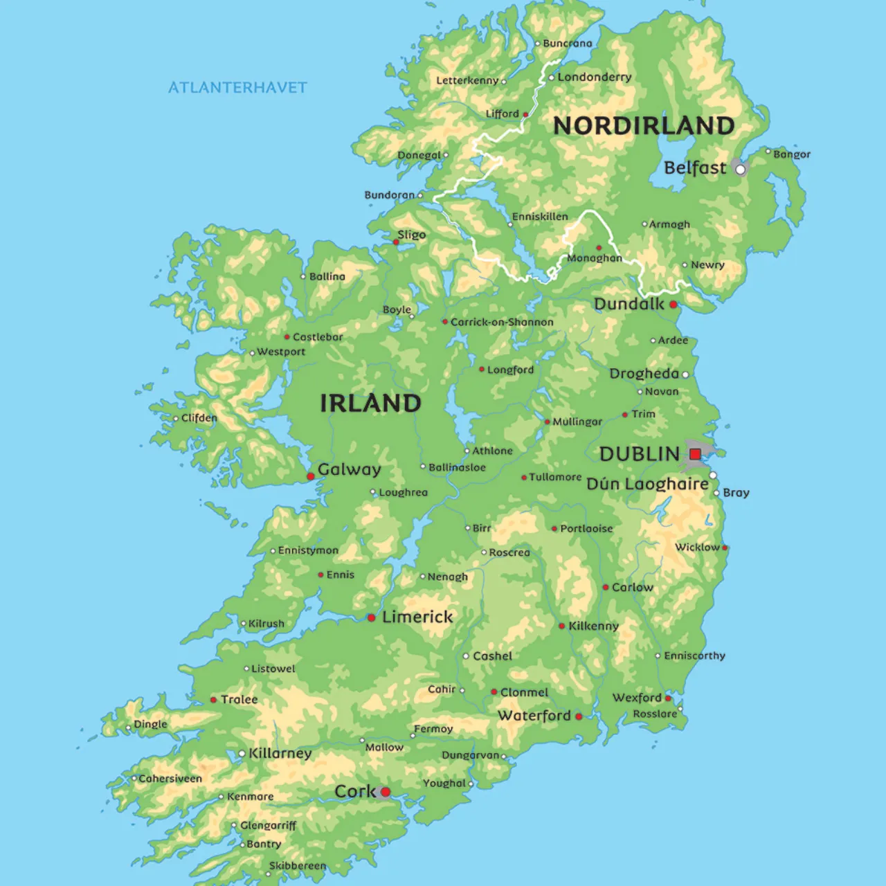

⚡ Korte fakta om Irland
🗺️ Kart over Irland
Klikk på et av kartene for å åpne og zoome i fullskjerm!


1. Natur og klima
Irland kalles ofte for «Den grønne øya» fordi regn og mildt klima gjør at gresset og naturen er utrolig grønn året rundt!
Carrauntoohil er Irlands høyeste fjell, og strekker seg 1 038 meter over havet.
De berømte Cliffs of Moher stuper mer enn 200 meter rett ned i det ville Atlanterhavet!
Golfstrømmen gir milde vintre og kjølige somre, men også rikelig med regnbyger.
Dyreliv: Overalt på de grønne åsryggene ser du tusenvis av sauer og kuer! Det finnes ingen slanger på Irland – sagnet sier at Saint Patrick jaget dem alle ut på havet.
2. Folk og samfunn
I Republikken Irland bor det ca. 5,1 millioner mennesker. Irer er verdenskjent for sin gjestfrihet, fortellertradisjon og musikkgleder!
🏢 Største byer i Irland
- 🔹 Dublin: Hovedstaden kjent for River Liffey, slottet og koselige gater!
- 🔹 Cork: Den nest største byen, beliggende helt i sør.
- 🔹 Andre kjente byer: Galway (kulturby i vest) og Limerick.
🎻 Musikk, dans & St. Patrick
Irland har en rik tradisjon for livlig folkemusikk med fiolin, fløyter og irsk stepdans (som Riverdance).
På nasjonaldagen St. Patrick's Day (17. mars) kler folk seg i grønt over hele verden for å feire Irland!
🗣️ Språk og deling av øya
De offisielle språkene er engelsk og irsk (Gaeilge). Øya Irland er delt i to: Republikken Irland (som denne siden handler om) og Nord-Irland, som er en del av Storbritannia.
3. Stat og politikk
Til forskjell fra Norge og Danmark er Irland en republikk, noe som betyr at de har en president i stedet for en konge.
Laster...
Irlands president og statsoverhode.
Laster...
Regjeringssjefen (kalles Taoiseach på irsk).
Oireachtas
Det irske parlamentet som vedtar lover i Dublin.
📍 Irland er tradisjonelt delt inn i 4 provinser (Leinster, Munster, Connacht og Ulster) og 26 grevskaper (counties).
4. Irlands historie
🏹 Keltere og Saint Patrick (400–500 e.Kr.)
Keltisk kultur satte dype spor. På 400-tallet kom Saint Patrick og innførte kristendommen på øya.
⚔️ Vikingene grunnlegger Dublin (795–841)
Norske og danske vikinger angrep klostre og grunnla senere handelsbyer som Dublin, Cork og Waterford!
🥔 Den store potetnøden (1845–1852)
Sykdom på potetavlingene førte til hungersnød. Over 1 million mennesker sultet, og over 1 million utvandret (spesielt til USA).
 Selvstendighet (1916–1921)
Selvstendighet (1916–1921)
Etter Påskeopprøret i 1916 og uavhengighetskrigen ble Republikken Irland opprettet og frigjort fra Storbritannia.
💻 Den keltiske tigeren (1990–i dag)
Irland forvandlet seg fra et fattig landbruksland til et moderne og rikere teknologi-senter i Europa.
5. Økonomi og næringsliv
Hva lever de av i Irland? Irland kombinerer tradisjonelt landbruk med verdens ledende teknologi- og medisinselskaper!
Teknologi
Google, Apple og Meta har sine europakontorer i Irland.
Meieri & Kjøtt
Kjent for smør (Kerrygold), melk og oksekjøtt i verdensklasse.
Medisin
Stor produsent av legemidler og medisinsk utstyr.
Turisme
Millioner av turister besøker slott, klipper og puber hvert år.
6. Kultur og underholdning
🏫 Skole og nasjonalsporter
Skolen starter vanligvis når barna er 4–5 år gamle. Unike nasjonalsporter står veldig sterkt på Irland!
🏉 Irlands mest populære sporter:
Gaelic Football, Hurling (verdens raskeste gressport!), Rugby og Fotball.
🌟 Kjente irer
- 📚 Oscar Wilde & James Joyce: Verdensberømte forfattere.
- 🎸 Bono & U2: Et av verdens største rockeband gjennom tidene.
- 🎬 Cillian Murphy & Liam Neeson: Berømte skuespillere fra filmverdenen.
- ☘️ Saint Patrick: Irlands vernehelgen som feires verden over.
🧠 Test deg selv: Irland-Quiz!
Spørsmål laster...